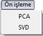
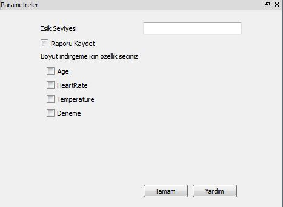

Ön İşleme Menüsü
Ön İşleme Menüsü:
Bu menünün altında bulunan kısımlarda

PCA: Bu altmenüyle,
Kullanımına bakacak olursak;
PIVA'nın
Ön İşleme menüsünden
PCA altmenüsüne tıklandığı zaman ekranın
Parametreler
için ayarlanan alanına Pie chart'ı oluşturmak için gereken parametreleri kullanıcıdan alan ekran gelecektir.

SVD: Bu altmenüyle,
Kullanımına bakacak olursak;
PIVA'nın
Ön İşleme menüsünden
SVD altmenüsüne tıklandığı zaman ekranın
Parametreler
için ayarlanan alanına Pie chart'ı oluşturmak için gereken parametreleri kullanıcıdan alan ekran gelecektir.